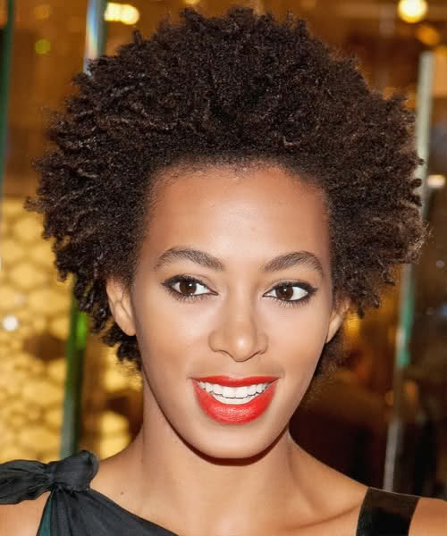

Cachos 4b - Crespo
Possui uma estrutura um pouco mais aberta dentre os tipos 4, podemos dizer que chegam até a formar certos cachos só que bem enrolados como uma mola encolhida.
O cabelo tipo 4B difere do tipo 4C na forma dos fios e na textura. Os caracóis do tipo 4B são um pouco mais definidos que o 4C. E o cabelo 4B tem uma sensação mais suave ao tocar, semelhante ao de um algodão enquanto que o cabelo 4C é mais áspero e seco.É o intermediário entre os tipo 4, nem com molinhas perfeitas mas, não são sem cachos totalmente, mas já necessita de um nível de hidratação um pouco maior.
Cuidados
- Lava o cabelo 1 ou 2 vezes por semana com um shampoo realmente hidratante (sem sulfato!)
- Uma vez por mês lava o cabelo com um Clarifying Shampoo (Shampoo Anti-Resíduos)
- Depois de lavares o cabelo deves aplicar um leave-in (ou um creme aguado hidratante), depois um activador de caracóis e a seguir um óleo natural.
- Se as pontas do teu cabelo costumam estar muito secas, podes fazer Umectação regularmente.